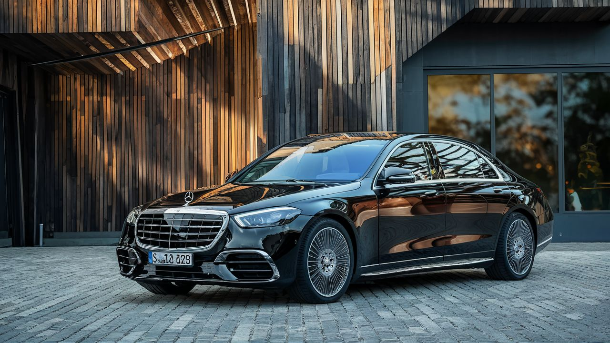
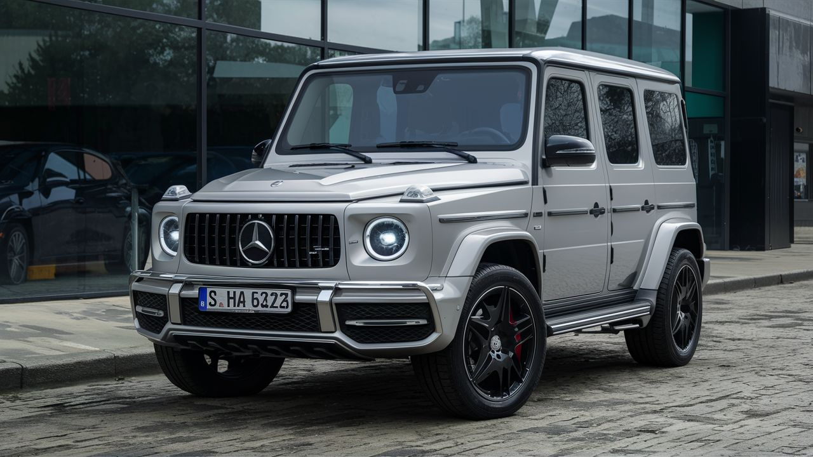
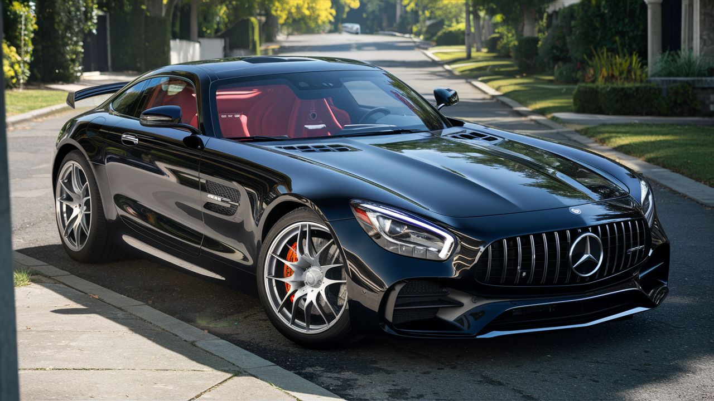

Mercedes-Benz
Mercedes-Benz es una reconocida empresa alemana fabricante de vehículos de lujo, perteneciente al Grupo Mercedes-Benz. La marca se destaca por su combinación de lujo, deportividad y rendimiento en una amplia gama de vehículos que incluyen sedanes, coupés, SUVs y más. Con una larga historia de excelencia en la industria automotriz, Mercedes-Benz ha establecido un estándar de calidad y sofisticación en sus productos . Mercedes-Benz continúa siendo una opción deseada para aquellos que buscan lujo, confort y prestaciones superiores en un automóvil. Con constantes avances tecnológicos y un enfoque en la experiencia del cliente, Mercedes-Benz se mantiene como un referente en el segmento premium del mercado automotriz
Modelos destacados
Mercedes-Benz S-Class

Motor: V6 de 3.0 litros Twin-Turbo o V8 de 4.0 litros Twin-Turbo Potencia: 362 - 496 caballos de fuerza Características: Berlina de lujo, tecnología de punta, confort supremo. Precio: Desde aproximadamente $100,000 USD.
Mercedes-Benz G-Class
Motor: V8 de 4.0 litros Twin-Turbo Potencia: 416 - 577 caballos de fuerza Características: SUV de lujo icónico, capacidad todoterreno excepcional, lujo y comodidad. Precio: Desde aproximadamente $130,000 USD.
Mercedes-AMG GT:
Motor: V8 de 4.0 litros Twin-Turbo Potencia: 469 - 720 caballos de fuerza Características: Supercar deportivo de lujo, diseño elegante, rendimiento excepcional. Precio: Desde aproximadamente $115,000 USD.